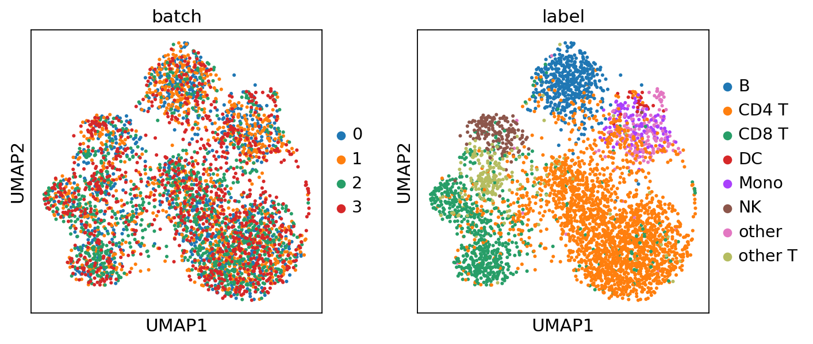
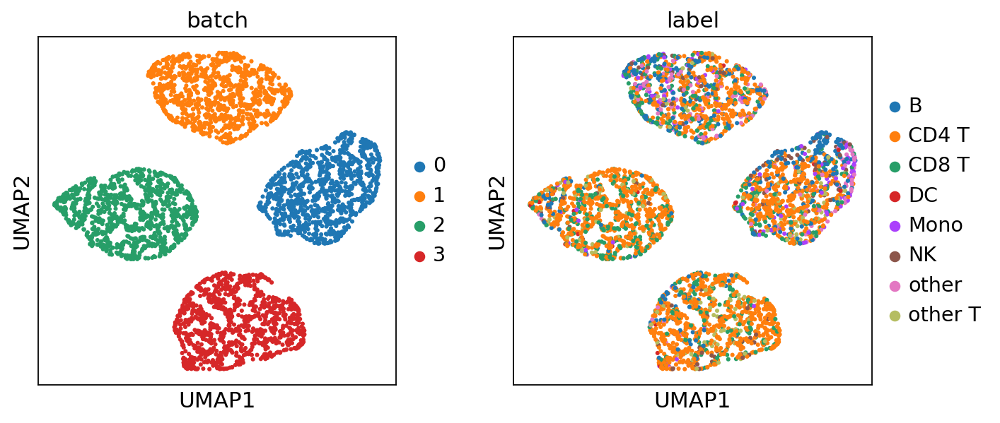
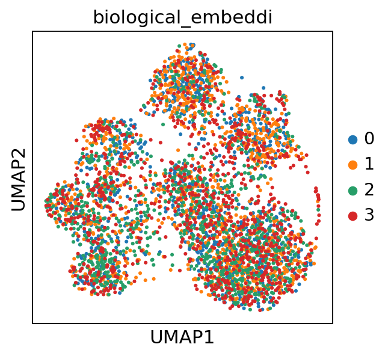
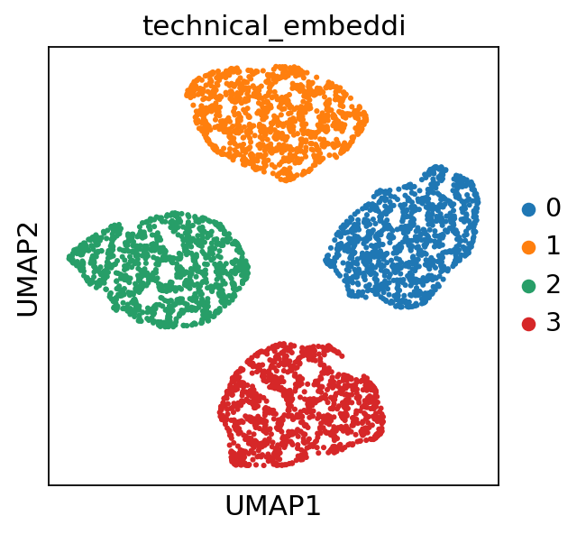
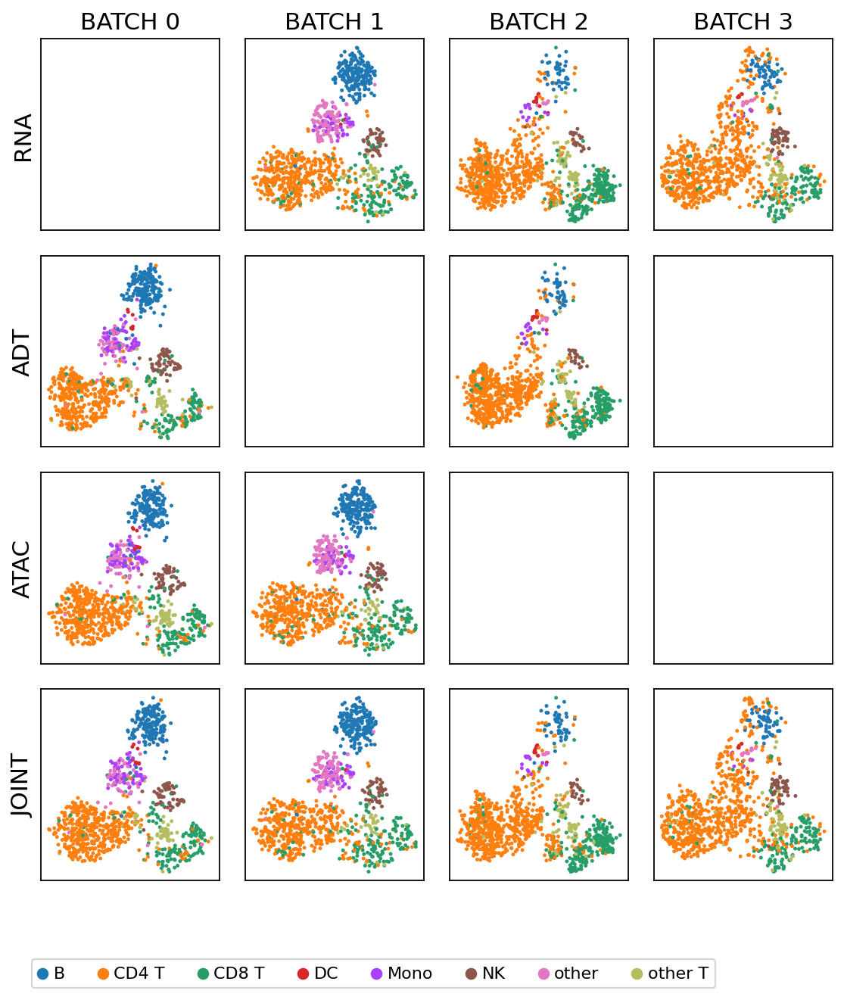
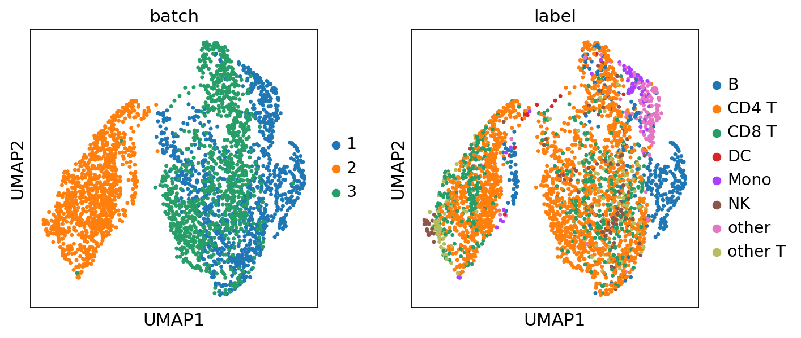
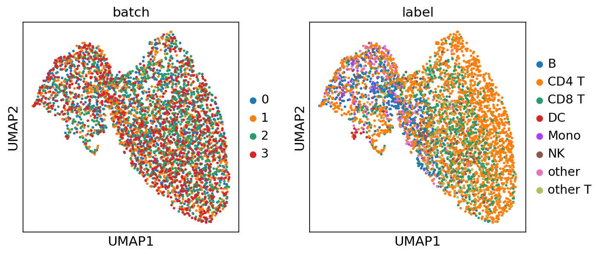

Tutorials#
Step 1: Download the Demo Data#
[ ]:
! wget teadog_full_8k
! unzip teadog_full_8k.zip
Step 2: Set Up the Environment#
[1]:
import os
os.chdir("/opt/data/private/zjh/code/midas_pl")
os.environ["CUDA_VISIBLE_DEVICES"]="0"
from scmidas.model import MIDAS
from scmidas.utils import load_predicted
import lightning as L
from lightning.pytorch import loggers as pl_loggers
import pandas as pd
import numpy as np
import scanpy as sc
import matplotlib.pyplot as plt
from scipy.stats import pearsonr
sc.set_figure_params(figsize=(4, 4))
Step 3: Configure the Model#
[2]:
task = "teadog_mosaic_8k"
transfrom = {"atac":"binarize"}
model = MIDAS.configure_data_from_dir(task, transfrom, config_name="default")
Input Summary (Mask Density and Number)
RNA ADT ATAC #Cell
BATCH 0 - 0.211268 1 1000
BATCH 1 0.820855 - 1 1000
BATCH 2 0.954287 0.976526 - 1000
BATCH 3 0.926859 - - 1000
The model is initialized with the configurations from '/opt/data/private/zjh/code/midas_pl/scmidas/model_config.toml' [default].
Modify this file to change the configurations.
Step 4: Train the Model#
~2h
[ ]:
tb_logger = pl_loggers.TensorBoardLogger(save_dir="./logs/", version=task)
trainer = L.Trainer(
accelerator="auto",
devices=1,
precision=32,
strategy="auto",
num_nodes=1,
max_epochs = 2000,
logger=tb_logger,
log_every_n_steps= 5)
trainer.fit(model=model)
GPU available: True (cuda), used: True
TPU available: False, using: 0 TPU cores
HPU available: False, using: 0 HPUs
LOCAL_RANK: 0 - CUDA_VISIBLE_DEVICES: [0]
| Name | Type | Params | Mode
-----------------------------------------------
0 | net | VAE | 49.8 M | train
1 | dsc | Discriminator | 52.2 K | train
-----------------------------------------------
49.8 M Trainable params
0 Non-trainable params
49.8 M Total params
199.356 Total estimated model params size (MB)
676 Modules in train mode
0 Modules in eval mode
Total number of samples: 4000 from 4 datasets.
Using MultiBatchSampler for data loading.
DataLoader created with batch size 256 and 20 workers.
/root/anaconda3/envs/pl/lib/python3.12/site-packages/torch/utils/data/sampler.py:76: UserWarning: `data_source` argument is not used and will be removed in 2.2.0.You may still have custom implementation that utilizes it.
warnings.warn(
Epoch 500: 100%|██████████| 16/16 [00:04<00:00, 3.96it/s, v_num=c_8k, loss_/recon_loss_step=2.26e+3, loss_/kld_loss_step=91.20, loss_/consistency_loss_step=0.000, loss/net_step=2.28e+3, loss/dsc_step=69.50, loss_/recon_loss_epoch=6.28e+3, loss_/kld_loss_epoch=104.0, loss_/consistency_loss_epoch=26.60, loss/net_epoch=6.33e+3, loss/dsc_epoch=78.40]Checkpoint successfully saved to './saved_models/model_epoch500_20241209-031324.pt'.
Checkpoint saved for epoch 500 at './saved_models/model_epoch500_20241209-031324.pt'.
Epoch 1000: 100%|██████████| 16/16 [00:03<00:00, 4.61it/s, v_num=c_8k, loss_/recon_loss_step=9.09e+3, loss_/kld_loss_step=113.0, loss_/consistency_loss_step=20.10, loss/net_step=9.14e+3, loss/dsc_step=87.40, loss_/recon_loss_epoch=5.96e+3, loss_/kld_loss_epoch=110.0, loss_/consistency_loss_epoch=21.30, loss/net_epoch=6.02e+3, loss/dsc_epoch=79.10]Checkpoint successfully saved to './saved_models/model_epoch1000_20241209-034519.pt'.
Checkpoint saved for epoch 1000 at './saved_models/model_epoch1000_20241209-034519.pt'.
Epoch 1500: 100%|██████████| 16/16 [00:03<00:00, 4.29it/s, v_num=c_8k, loss_/recon_loss_step=2.85e+3, loss_/kld_loss_step=114.0, loss_/consistency_loss_step=35.10, loss/net_step=2.91e+3, loss/dsc_step=86.80, loss_/recon_loss_epoch=5.75e+3, loss_/kld_loss_epoch=112.0, loss_/consistency_loss_epoch=21.30, loss/net_epoch=5.8e+3, loss/dsc_epoch=79.30] Checkpoint successfully saved to './saved_models/model_epoch1500_20241209-041625.pt'.
Checkpoint saved for epoch 1500 at './saved_models/model_epoch1500_20241209-041625.pt'.
Epoch 1999: 100%|██████████| 16/16 [00:03<00:00, 4.15it/s, v_num=c_8k, loss_/recon_loss_step=2.75e+3, loss_/kld_loss_step=115.0, loss_/consistency_loss_step=33.00, loss/net_step=2.82e+3, loss/dsc_step=86.70, loss_/recon_loss_epoch=5.58e+3, loss_/kld_loss_epoch=113.0, loss_/consistency_loss_epoch=21.50, loss/net_epoch=5.64e+3, loss/dsc_epoch=78.50]
`Trainer.fit` stopped: `max_epochs=2000` reached.
Epoch 1999: 100%|██████████| 16/16 [00:03<00:00, 4.14it/s, v_num=c_8k, loss_/recon_loss_step=2.75e+3, loss_/kld_loss_step=115.0, loss_/consistency_loss_step=33.00, loss/net_step=2.82e+3, loss/dsc_step=86.70, loss_/recon_loss_epoch=5.58e+3, loss_/kld_loss_epoch=113.0, loss_/consistency_loss_epoch=21.50, loss/net_epoch=5.64e+3, loss/dsc_epoch=78.50]
Checkpoint successfully saved to './saved_models/model_epoch2000_20241209-044721.pt'.
Checkpoint saved for epoch 2000 at './saved_models/model_epoch2000_20241209-044721.pt'.
Step 5: Inference#
[4]:
model.predict("./predict/"+task,
joint_latent=True,
mod_latent=True,
impute=True,
batch_correct=True,
translate=True,
input=True)
Predicting ...
Processing batch 0: ['atac', 'adt']
0%| | 0/4 [00:00<?, ?it/s]100%|██████████| 4/4 [02:27<00:00, 36.91s/it]
Processing batch 1: ['atac', 'rna']
100%|██████████| 4/4 [02:25<00:00, 36.36s/it]
Processing batch 2: ['rna', 'adt']
100%|██████████| 4/4 [02:11<00:00, 32.95s/it]
Processing batch 3: ['rna']
100%|██████████| 4/4 [02:10<00:00, 32.54s/it]
Calculating u_centroid ...
Loading predicted variables ...
Loading batch 0: z, joint
100%|██████████| 4/4 [00:00<00:00, 433.43it/s]
Loading batch 1: z, joint
100%|██████████| 4/4 [00:00<00:00, 322.95it/s]
Loading batch 2: z, joint
100%|██████████| 4/4 [00:00<00:00, 297.56it/s]
Loading batch 3: z, joint
100%|██████████| 4/4 [00:00<00:00, 306.56it/s]
Converting to numpy ...
Converting batch 0: s, joint
Converting batch 0: z, joint
Converting batch 1: s, joint
Converting batch 1: z, joint
Converting batch 2: s, joint
Converting batch 2: z, joint
Converting batch 3: s, joint
Converting batch 3: z, joint
Batch correction ...
Processing batch 0: ['atac', 'adt']
100%|██████████| 4/4 [00:10<00:00, 2.67s/it]
Processing batch 1: ['atac', 'rna']
100%|██████████| 4/4 [00:11<00:00, 2.86s/it]
Processing batch 2: ['rna', 'adt']
100%|██████████| 4/4 [00:05<00:00, 1.27s/it]
Processing batch 3: ['rna']
100%|██████████| 4/4 [00:04<00:00, 1.15s/it]
Step 6: Outputs of MIDAS#
load labels#
[4]:
label = []
for i in ["w1", "w6", "lll_ctrl", "dig_stim"]:
label.append(pd.read_csv("/opt/data/private/zjh/code/midas_pl/teadog_8k_label/%s.csv"%i, index_col=0).values.flatten()[:1000])
label = np.concatenate(label)
joint embeddings (biological information c and technical information u)#
[7]:
#check the batch effect of raw counts (RNA)
joint_embeddings = load_predicted("./predict/"+task, model.s_joint, model.combs, model.mods, joint_latent=True)
adata_bio = sc.AnnData(joint_embeddings["z"]["joint"][:, :model.dim_c])
adata_tech = sc.AnnData(joint_embeddings["z"]["joint"][:, model.dim_c:])
adata_bio.obs["batch"] = joint_embeddings["s"]["joint"].astype("int").astype("str")
adata_bio.obs["label"] = label
adata_tech.obs["batch"] = joint_embeddings["s"]["joint"].astype("int").astype("str")
adata_tech.obs["label"] = label
for adata in [adata_bio, adata_tech]:
sc.pp.neighbors(adata)
sc.tl.umap(adata)
sc.pl.umap(adata, color=["batch", "label"], ncols=2)
Loading predicted variables ...
Loading batch 0: z, joint
100%|██████████| 4/4 [00:00<00:00, 218.18it/s]
Loading batch 1: z, joint
100%|██████████| 4/4 [00:00<00:00, 254.01it/s]
Loading batch 2: z, joint
100%|██████████| 4/4 [00:00<00:00, 199.11it/s]
Loading batch 3: z, joint
100%|██████████| 4/4 [00:00<00:00, 230.32it/s]
Converting to numpy ...
Converting batch 0: s, joint
Converting batch 0: z, joint
Converting batch 1: s, joint
Converting batch 1: z, joint
Converting batch 2: s, joint
Converting batch 2: z, joint
Converting batch 3: s, joint
Converting batch 3: z, joint
/root/anaconda3/envs/pl/lib/python3.12/site-packages/tqdm/auto.py:21: TqdmWarning: IProgress not found. Please update jupyter and ipywidgets. See https://ipywidgets.readthedocs.io/en/stable/user_install.html
from .autonotebook import tqdm as notebook_tqdm


[8]:
#the same as the upper box, here we provide a api for quick visualization of the joint embeddings
adata, _ = model.get_emb_umap("./predict/"+task)
Loading predicted data from: ./predict/teadog_mosaic_8k
Loading predicted variables ...
Loading batch 0: z, joint
100%|██████████| 4/4 [00:00<00:00, 169.67it/s]
Loading batch 1: z, joint
100%|██████████| 4/4 [00:00<00:00, 172.17it/s]
Loading batch 2: z, joint
100%|██████████| 4/4 [00:00<00:00, 160.72it/s]
Loading batch 3: z, joint
100%|██████████| 4/4 [00:00<00:00, 165.16it/s]
Converting to numpy ...
Converting batch 0: s, joint
Converting batch 0: z, joint
Converting batch 1: s, joint
Converting batch 1: z, joint
Converting batch 2: s, joint
Converting batch 2: z, joint
Converting batch 3: s, joint
Converting batch 3: z, joint
Processing biological embedding...
- Computing neighbors...
- Computing UMAP...
- Generating UMAP plot for biological_embedding.png...
- UMAP plot saved to: ./figs/biological_embedding.png
Processing technical embedding...
- Computing neighbors...
- Computing UMAP...
- Generating UMAP plot for technical_embedding.png...
- UMAP plot saved to: ./figs/technical_embedding.png
UMAP generation completed.


modality-specific embeddings#
[56]:
adata_mod_concat.obs['batch'].dtypes
[56]:
dtype('O')
[62]:
#check the batch effect of raw counts (RNA)
mod_embeddings = load_predicted("./predict/"+task, model.s_joint, model.combs, model.mods, mod_latent=True, group_by="batch")
adata_list = []
for i in range(model.dims_s["joint"]):
for m in model.mods+["joint"]:
if m in mod_embeddings[i]["z"]:
adata = sc.AnnData(mod_embeddings[i]["z"][m][:, :model.dim_c])
adata.obs["batch"] = "BATCH "+str(i)
adata.obs["modality"] = m
adata.obs["label"] = label[(i*1000):((i+1)*1000)]
adata_list.append(adata)
adata_mod_concat = sc.concat(adata_list)
for i in adata_mod_concat.obs:
adata_mod_concat.obs[i] = adata_mod_concat.obs[i].astype('category')
sc.pp.neighbors(adata_mod_concat)
sc.tl.umap(adata_mod_concat)
Loading predicted variables ...
Loading batch 0: z, joint
100%|██████████| 4/4 [00:00<00:00, 140.83it/s]
Loading batch 0: z, atac
100%|██████████| 4/4 [00:00<00:00, 164.54it/s]
Loading batch 0: z, adt
100%|██████████| 4/4 [00:00<00:00, 164.01it/s]
Loading batch 1: z, joint
100%|██████████| 4/4 [00:00<00:00, 157.11it/s]
Loading batch 1: z, atac
100%|██████████| 4/4 [00:00<00:00, 165.80it/s]
Loading batch 1: z, rna
100%|██████████| 4/4 [00:00<00:00, 161.76it/s]
Loading batch 2: z, joint
100%|██████████| 4/4 [00:00<00:00, 160.34it/s]
Loading batch 2: z, rna
100%|██████████| 4/4 [00:00<00:00, 162.68it/s]
Loading batch 2: z, adt
100%|██████████| 4/4 [00:00<00:00, 85.08it/s]
Loading batch 3: z, joint
100%|██████████| 4/4 [00:00<00:00, 6.51it/s]
Loading batch 3: z, rna
100%|██████████| 4/4 [00:00<00:00, 158.77it/s]
Converting to numpy ...
Converting batch 0: s, joint
Converting batch 0: s, atac
Converting batch 0: s, adt
Converting batch 0: z, joint
Converting batch 0: z, atac
Converting batch 0: z, adt
Converting batch 1: s, joint
Converting batch 1: s, atac
Converting batch 1: s, rna
Converting batch 1: z, joint
Converting batch 1: z, atac
Converting batch 1: z, rna
Converting batch 2: s, joint
Converting batch 2: s, rna
Converting batch 2: s, adt
Converting batch 2: z, joint
Converting batch 2: z, rna
Converting batch 2: z, adt
Converting batch 3: s, joint
Converting batch 3: s, rna
Converting batch 3: z, joint
Converting batch 3: z, rna
/root/anaconda3/envs/pl/lib/python3.12/site-packages/anndata/_core/anndata.py:1756: UserWarning: Observation names are not unique. To make them unique, call `.obs_names_make_unique`.
utils.warn_names_duplicates("obs")
[64]:
# setup figure
nrows = len(model.mods) + 1
ncols = model.dims_s["joint"]
point_size = 20
fig, ax = plt.subplots(nrows, ncols, figsize=[2 * ncols, 2 * nrows])
# set up the name of modalities and batch
mod_names = model.mods + ["joint"]
batch_names = [f"Batch {b}" for b in range(model.dims_s["joint"])]
# iteratively scatter the data
for i, mod in enumerate(mod_names):
for b in range(model.dims_s["joint"]):
# filter data
adata = adata_mod_concat[
(adata_mod_concat.obs["modality"] == mod) &
(adata_mod_concat.obs["batch"] == "BATCH "+str(b))
].copy()
if len(adata):
sc.pl.umap(adata, color="label", show=False, ax=ax[i, b], s=point_size)
ax[i, b].get_legend().set_visible(False)
handles, labels = ax[i, b].get_legend_handles_labels()
ax[i, b].set_xticks([])
ax[i, b].set_yticks([])
ax[i, b].set_xlabel("")
if b==0:
ax[i, b].set_ylabel(mod.upper())
else:
ax[i, b].set_ylabel("")
if i==0:
ax[i, b].set_title("BATCH "+str(b))
else:
ax[i, b].set_title("")
# create global legend
fig.legend(handles, labels, loc="center", bbox_to_anchor=(0.5, -0.02), ncol=len(labels), fontsize=10)
# adjust the figure
plt.tight_layout(rect=[0.1, 0.05, 1, 1])
plt.show()

inputs#
[33]:
#check the batch effect of raw counts (RNA)
raw_data = load_predicted("./predict/"+task, model.s_joint, model.combs, model.mods, input=True)
raw_data_adata = sc.AnnData(raw_data["x"]["rna"])
raw_data_adata.obs["batch"] = raw_data["s"]["joint"].astype("int").astype("str")[1000:]
raw_data_adata.obs["label"] = label[1000:]
raw_data_adata
sc.pp.neighbors(raw_data_adata)
sc.tl.umap(raw_data_adata)
sc.pl.umap(raw_data_adata, color=["batch", "label"], ncols=2)
Loading predicted variables ...
Loading batch 0: z, joint
100%|██████████| 4/4 [00:00<00:00, 169.50it/s]
Loading batch 0: x, atac
100%|██████████| 4/4 [00:02<00:00, 1.38it/s]
Loading batch 0: x, adt
100%|██████████| 4/4 [00:00<00:00, 18.52it/s]
Loading batch 1: z, joint
100%|██████████| 4/4 [00:00<00:00, 185.13it/s]
Loading batch 1: x, atac
100%|██████████| 4/4 [00:02<00:00, 1.42it/s]
Loading batch 1: x, rna
100%|██████████| 4/4 [00:00<00:00, 4.32it/s]
Loading batch 2: z, joint
100%|██████████| 4/4 [00:01<00:00, 3.32it/s]
Loading batch 2: x, rna
100%|██████████| 4/4 [00:00<00:00, 7.82it/s]
Loading batch 2: x, adt
100%|██████████| 4/4 [00:00<00:00, 74.81it/s]
Loading batch 3: z, joint
100%|██████████| 4/4 [00:00<00:00, 148.74it/s]
Loading batch 3: x, rna
100%|██████████| 4/4 [00:00<00:00, 9.04it/s]
Converting to numpy ...
Converting batch 0: s, joint
Converting batch 0: z, joint
Converting batch 0: x, atac
Converting batch 0: x, adt
Converting batch 1: s, joint
Converting batch 1: z, joint
Converting batch 1: x, atac
Converting batch 1: x, rna
Converting batch 2: s, joint
Converting batch 2: z, joint
Converting batch 2: x, rna
Converting batch 2: x, adt
Converting batch 3: s, joint
Converting batch 3: z, joint
Converting batch 3: x, rna
/root/anaconda3/envs/pl/lib/python3.12/site-packages/scanpy/tools/_utils.py:41: UserWarning: You’re trying to run this on 4047 dimensions of `.X`, if you really want this, set `use_rep='X'`.
Falling back to preprocessing with `sc.pp.pca` and default params.
warnings.warn(

batch-corrected counts#
[36]:
#check the batch effect of MIDAS's batch-corrected counts (RNA)
batch_corrected = load_predicted("./predict/"+task, model.s_joint, model.combs, model.mods, batch_correct=True)
batch_corrected_adata = sc.AnnData(batch_corrected["x_bc"]["rna"])
batch_corrected_adata.obs["batch"] = batch_corrected["s"]["joint"].astype("int").astype("str")
batch_corrected_adata.obs["label"] = label
batch_corrected_adata
sc.pp.neighbors(batch_corrected_adata)
sc.tl.umap(batch_corrected_adata)
sc.pl.umap(batch_corrected_adata, color=["batch", "label"], ncols=2)
Loading predicted variables ...
Loading batch 0: z, joint
100%|██████████| 4/4 [00:00<00:00, 11.60it/s]
Loading batch 0: x_bc, rna
100%|██████████| 4/4 [00:00<00:00, 13.47it/s]
Loading batch 0: x_bc, adt
100%|██████████| 4/4 [00:00<00:00, 104.74it/s]
Loading batch 0: x_bc, atac
100%|██████████| 4/4 [00:01<00:00, 3.24it/s]
Loading batch 1: z, joint
100%|██████████| 4/4 [00:00<00:00, 92.94it/s]
Loading batch 1: x_bc, rna
100%|██████████| 4/4 [00:00<00:00, 17.11it/s]
Loading batch 1: x_bc, adt
100%|██████████| 4/4 [00:00<00:00, 120.71it/s]
Loading batch 1: x_bc, atac
100%|██████████| 4/4 [00:01<00:00, 3.24it/s]
Loading batch 2: z, joint
100%|██████████| 4/4 [00:00<00:00, 7.10it/s]
Loading batch 2: x_bc, rna
100%|██████████| 4/4 [00:00<00:00, 15.26it/s]
Loading batch 2: x_bc, adt
100%|██████████| 4/4 [00:00<00:00, 93.81it/s]
Loading batch 2: x_bc, atac
100%|██████████| 4/4 [00:01<00:00, 2.59it/s]
Loading batch 3: z, joint
100%|██████████| 4/4 [00:00<00:00, 46.56it/s]
Loading batch 3: x_bc, rna
100%|██████████| 4/4 [00:00<00:00, 13.05it/s]
Loading batch 3: x_bc, adt
100%|██████████| 4/4 [00:00<00:00, 97.94it/s]
Loading batch 3: x_bc, atac
100%|██████████| 4/4 [00:00<00:00, 4.16it/s]
Converting to numpy ...
Converting batch 0: s, joint
Converting batch 0: z, joint
Converting batch 0: x_bc, rna
Converting batch 0: x_bc, adt
Converting batch 0: x_bc, atac
Converting batch 1: s, joint
Converting batch 1: z, joint
Converting batch 1: x_bc, rna
Converting batch 1: x_bc, adt
Converting batch 1: x_bc, atac
Converting batch 2: s, joint
Converting batch 2: z, joint
Converting batch 2: x_bc, rna
Converting batch 2: x_bc, adt
Converting batch 2: x_bc, atac
Converting batch 3: s, joint
Converting batch 3: z, joint
Converting batch 3: x_bc, rna
Converting batch 3: x_bc, adt
Converting batch 3: x_bc, atac
/root/anaconda3/envs/pl/lib/python3.12/site-packages/scanpy/tools/_utils.py:41: UserWarning: You’re trying to run this on 4047 dimensions of `.X`, if you really want this, set `use_rep='X'`.
Falling back to preprocessing with `sc.pp.pca` and default params.
warnings.warn(

imputed counts#
[38]:
imputed = load_predicted("./predict/"+task, model.s_joint, model.combs, model.mods, impute=True)
Loading predicted variables ...
Loading batch 0: z, joint
100%|██████████| 4/4 [00:00<00:00, 194.35it/s]
Loading batch 0: x_impt, rna
100%|██████████| 4/4 [00:01<00:00, 3.68it/s]
Loading batch 0: x_impt, adt
100%|██████████| 4/4 [00:00<00:00, 74.61it/s]
Loading batch 0: x_impt, atac
100%|██████████| 4/4 [00:05<00:00, 1.46s/it]
Loading batch 1: z, joint
100%|██████████| 4/4 [00:00<00:00, 66.94it/s]
Loading batch 1: x_impt, rna
100%|██████████| 4/4 [00:00<00:00, 5.15it/s]
Loading batch 1: x_impt, adt
100%|██████████| 4/4 [00:00<00:00, 80.65it/s]
Loading batch 1: x_impt, atac
100%|██████████| 4/4 [00:05<00:00, 1.36s/it]
Loading batch 2: z, joint
100%|██████████| 4/4 [00:01<00:00, 3.68it/s]
Loading batch 2: x_impt, rna
100%|██████████| 4/4 [00:00<00:00, 5.36it/s]
Loading batch 2: x_impt, adt
100%|██████████| 4/4 [00:00<00:00, 60.23it/s]
Loading batch 2: x_impt, atac
100%|██████████| 4/4 [00:05<00:00, 1.41s/it]
Loading batch 3: z, joint
100%|██████████| 4/4 [00:00<00:00, 24.61it/s]
Loading batch 3: x_impt, rna
100%|██████████| 4/4 [00:00<00:00, 5.24it/s]
Loading batch 3: x_impt, adt
100%|██████████| 4/4 [00:00<00:00, 64.93it/s]
Loading batch 3: x_impt, atac
100%|██████████| 4/4 [00:05<00:00, 1.46s/it]
Converting to numpy ...
Converting batch 0: s, joint
Converting batch 0: z, joint
Converting batch 0: x_impt, rna
Converting batch 0: x_impt, adt
Converting batch 0: x_impt, atac
Converting batch 1: s, joint
Converting batch 1: z, joint
Converting batch 1: x_impt, rna
Converting batch 1: x_impt, adt
Converting batch 1: x_impt, atac
Converting batch 2: s, joint
Converting batch 2: z, joint
Converting batch 2: x_impt, rna
Converting batch 2: x_impt, adt
Converting batch 2: x_impt, atac
Converting batch 3: s, joint
Converting batch 3: z, joint
Converting batch 3: x_impt, rna
Converting batch 3: x_impt, adt
Converting batch 3: x_impt, atac
(Optional) calculate the re
[ ]:
! wget
! unzip
[ ]:
ref_adt = pd.read_csv("./teadog_full_8k/batch_1/mat/adt.csv", index_col=0).iloc[:1000].values
[49]:
pearsonr(ref_adt.reshape(-1), imputed["x_impt"]["adt"][1000:2000].reshape(-1))[0]
[49]:
0.5376321021516293